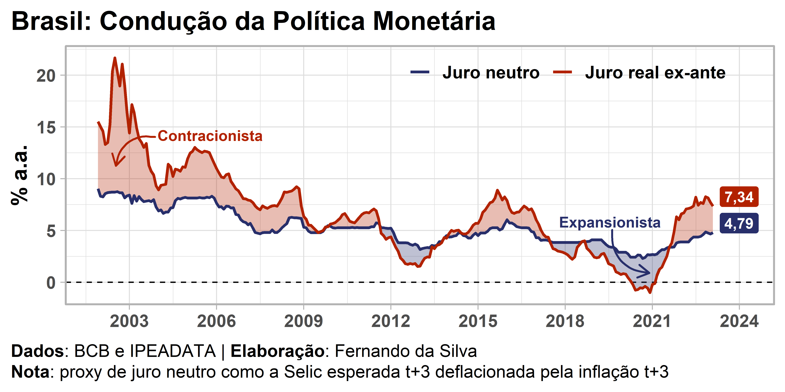
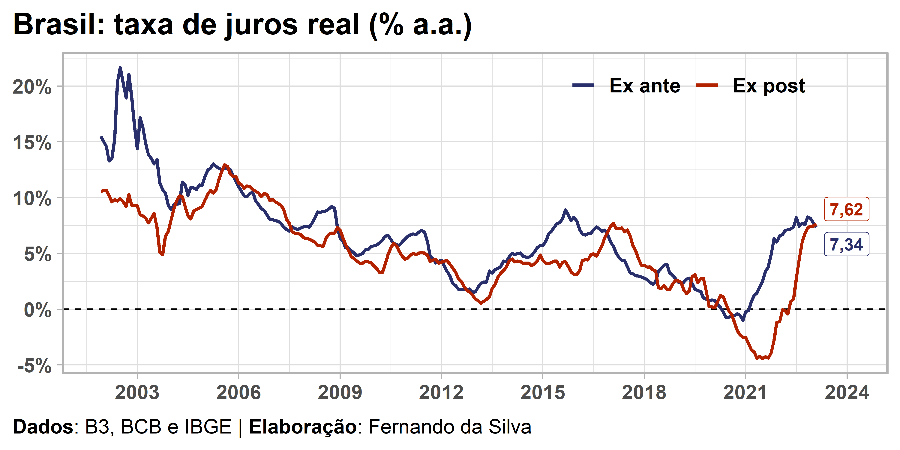

O dinheiro existe há bastante tempo e, geralmente, pagamos para poder usar o dinheiro e/ou poupança de outra pessoa (afinal, não existe almoço grátis). O preço dessa troca, entre o credor e o devedor, é o que usualmente se chama de juros. Também é comum que essa taxa, chamada de juros nominal, seja positiva e definida como um referencial pelo Banco Central de cada país, constituindo um dos principais instrumentos de controle da inflação.
Sabendo que a taxa de juros nominal é um preço, logo, há motivos para deflacioná-lo por um índice de correção de preços como o IPCA, por exemplo, de forma semelhante ao que fazemos quando é necessário “corrigir” o valor de um imóvel que irá à venda. O resultado dessa operação é o que é chamado de taxa de juros real, ou seja, a taxa nominal deflacionada pela taxa de inflação.
Também é com a taxa de juros real, em conjunto com uma outra taxa — a taxa neutra, que é uma taxa de juros teórica, consistente com a estabilidade da inflação ao longo do tempo —, que é possível analisar a condução da política monetária de uma economia. A política monetária é dita “contracionista” quando a taxa de juros real está acima da taxa de juros neutra, ou seja, a autoridade monetária está com a taxa de juros em território que desincentiva a tomada de crédito, os investimentos e o consumo de maneira geral. Do contrário, a política monetária é dita “expansionista”.
Conceitos ex-post e ex-ante
Existem basicamente duas perspectivas sobre a taxa de juros real: pelo conceito ex-post e pelo conceito ex-ante. No primeiro caso olhamos o comportamento dos juros no período passado, geralmente usando valores acumulados em 12 meses, o que nos permite verificar a tendência de juros real da economia; enquanto que no segundo caso é o oposto, estamos interessados em verificar o comportamento do juros real à frente, tomando como base expectativas de agentes de mercado, assim é possível identificar como é esperado o comportamento dos juros no futuro.
De forma mais visual, esses conceitos podem se traduzir em uma realidade da economia do país bastante impressionante se olharmos um período de tempo suficientemente grande, conforme a imagem abaixo:
Cálculo do juros real
Para chegar ao resultado que determina o juros real da economia usamos a equação de Fisher, através da fórmula bem simples a seguir:
\[r = \left(\frac{1+i}{1+\pi}\right)-1\] Onde os termos significam:
\(r\) = taxa de juros real
\(i\) = taxa de juros nominal
\(\pi\) = taxa de inflação
Note que se os dados estiverem expressos em percentual (% a.m., % a.a., etc.), você deve dividir o termo correspondente por 100 na fórmula acima.
Juros real no Brasil
Explicados brevemente estes conceitos e dado uma prévia do resultado que queremos chegar, podemos partir para uma aplicação do cálculo das taxas para a economia brasileira.
No caso da taxa de juros real ex-ante, opto aqui por utilizar a taxa do Swap DI-Pré 360 dias e as expectativas de IPCA esperado também de 1 ano à frente, provenientes da B3 e do boletim Focus/BCB respectivamente. Há outras maneiras de obter essa taxa, para uma discussão sobre o assunto recomendo esse texto do Bráulio Borges e Gilberto Borça Jr. Já no caso da taxa de juros real ex-post usamos a taxa Selic acumulada no mês anualizada em base de 252 dias úteis e o IPCA acumulado em 12 meses, provenientes do BCB e do IBGE respectivamente.
O que é necessário agora é obter esses dados e aplicar a equação de Fisher. A obtenção dos dados é bastante simples e rápida usando a linguagem R. Vamos usar as API’s de três fontes públicas de dados (IPEADATA, BCB e IBGE).
Pacotes
Primeiro carregamos os pacotes de R necessários (instale com install.packages() caso você não tenha algum instalado).
Coleta de dados
Em seguida utilizamos os parâmetros de cada API para obter os dados das fontes indicadas.
Code
# Expectativas IPCA em 12 meses
dados_focus_12m <- rbcb::get_market_expectations(
type = "inflation-12-months",
indic = "IPCA",
start_date = "1999-01-01"
)
# Swaps DI pré 360
dados_ipea <- ipeadatar::ipeadata("BMF12_SWAPDI36012")
# SELIC acumulada no mês anualizada base 252
dados_selic <- rbcb::get_series(code = c("selic" = 4189))
# IPCA acumulado em 12 meses
dados_ipca <- sidrar::get_sidra(api = "/t/1737/n1/all/v/2265/p/all/d/v2265%202")Tratamento de dados
Os dados coletados precisam de alguns tratamentos para ficarem no formato desejado, o que envolve cruzar as tabelas, calcular médias, filtrar observações, etc.
Code
# Swaps DI pré 360
swaps <- dplyr::select(dados_ipea, "data" = "date", "swaps" = "value")
# Expectativa média do IPCA em 12 meses
focus_12m <- dados_focus_12m |>
dplyr::filter(baseCalculo == 0 & Suavizada == "S") |>
dplyr::group_by(data = lubridate::floor_date(Data, unit = "month")) |>
dplyr::summarise(ipca_exp = mean(x = Mediana, na.rm = TRUE))
# SELIC acumulada no mês anualizada base 252
selic <- dplyr::rename(dados_selic, "data" = "date")
# IPCA acumulado em 12 meses
ipca <- dados_ipca |>
dplyr::mutate(
data = lubridate::ym(`Mês (Código)`),
ipca_obs = Valor,
.keep = "none"
) |>
dplyr::as_tibble()
# Cruzar tabelas
tabelas <- purrr::reduce(
.x = list(swaps, focus_12m, selic, ipca),
.f = dplyr::full_join,
by = "data"
) |>
dplyr::arrange(data) |>
dplyr::filter(data >= lubridate::ymd("2001-12-01"))
# Exibe dados
tail(tabelas)# A tibble: 6 × 5
data swaps ipca_exp selic ipca_obs
<date> <dbl> <dbl> <dbl> <dbl>
1 2022-10-01 13.2 5.17 13.6 6.47
2 2022-11-01 13.9 5.19 13.6 5.9
3 2022-12-01 13.8 5.26 13.6 5.79
4 2023-01-01 13.5 5.41 13.6 5.77
5 2023-02-01 13.4 5.66 13.6 5.6
6 2023-03-01 NA 5.59 13.6 NA Calcular o juros real
Com os dados em mãos, podemos finalmente aplicar a equação de Fisher. O resultado final será uma tabela com uma coluna com o período da observação, uma com o valor da taxa de juros real pelo conceito ex ante e outra pelo conceito ex-post.
Code
# Função útil para computar o cálculo
fisher <- function(juros, inflacao) {
r = ((1 + juros) / (1 + inflacao)) - 1
return(r)
}
# Cálculo da taxa de juros real
juros_real <- tabelas |>
dplyr::mutate(
ex_ante = fisher(juros = swaps/100, inflacao = ipca_exp/100) * 100,
ex_post = fisher(juros = selic/100, inflacao = ipca_obs/100) * 100,
data = data,
.keep = "none"
)
# Exibe dados
tail(juros_real)# A tibble: 6 × 3
data ex_ante ex_post
<date> <dbl> <dbl>
1 2022-10-01 7.60 6.74
2 2022-11-01 8.26 7.32
3 2022-12-01 8.15 7.43
4 2023-01-01 7.70 7.45
5 2023-02-01 7.34 7.62
6 2023-03-01 NA NA Extra: visualização de dados
Por fim vamos gerar um gráfico que mostra a evolução das duas séries. Eu gosto muito do pacote ggplot2, dá pra criar gráficos muito bonitos e com muita flexibilidade:
Code
# Gerar gráfico de linhas
juros_real <- juros_real |>
tidyr::drop_na() |>
tidyr::pivot_longer(cols = -"data", names_to = "conceito", values_to = "juros") |>
dplyr::mutate(conceito = dplyr::if_else(conceito == "ex_ante", "Ex ante", "Ex post"))
set.seed(1984)
ggplot2::ggplot(data = juros_real) +
ggplot2::aes(x = data, y = juros, color = conceito) +
ggplot2::geom_hline(yintercept = 0, linetype = "dashed") +
ggplot2::geom_line(size = 1) +
ggplot2::coord_cartesian(
clip = "off",
xlim = c(min(juros_real$data), max(juros_real$data) + months(12))
) +
ggrepel::geom_label_repel(
data = dplyr::filter(juros_real, data == max(data)),
mapping = ggplot2::aes(
label = format(x = juros, big.mark = ".", decimal.mark = ",", digits = 2, nsmall = 2)
),
show.legend = FALSE,
nudge_x = 70,
segment.colour = NA,
fontface = "bold"
) +
ggplot2::scale_color_manual(values = c("#282f6b", "#b22200")) +
ggplot2::scale_x_date(breaks = "3 years", date_labels = "%Y") +
ggplot2::scale_y_continuous(labels = scales::label_percent(scale = 1, accuracy = 1)) +
ggplot2::labs(
title = "Brasil: taxa de juros real (% a.a.)",
x = NULL,
y = NULL,
color = NULL,
caption = "**Dados**: B3, BCB e IBGE | **Elaboração**: Fernando da Silva"
) +
ggplot2::theme_light(base_size = 16) +
ggplot2::theme(
plot.title = ggplot2::element_text(face = "bold"),
plot.caption = ggtext::element_textbox_simple(
margin = ggplot2::margin(10, 0, 0, 0)
),
plot.title.position = "plot",
plot.caption.position = "plot",
axis.text = ggplot2::element_text(face = "bold"),
legend.text = ggplot2::element_text(face = "bold"),
legend.position = c(0.75, 0.9),
legend.key = ggplot2::element_blank(),
legend.background = ggplot2::element_blank(),
legend.direction = "horizontal"
)
Voilà! Eis o gráfico com os resultados do cálculo de juros real pelos conceitos ex-ante e ex-post. Espero que esse conteúdo tenha sido útil ou interessante para você. Até mais!
Informações da sessão
─ Session info ───────────────────────────────────────────────────────────────
setting value
version R version 4.2.1 (2022-06-23 ucrt)
os Windows 10 x64 (build 19045)
system x86_64, mingw32
ui RTerm
language (EN)
collate Portuguese_Brazil.utf8
ctype Portuguese_Brazil.utf8
tz America/Sao_Paulo
date 2023-03-10
pandoc 2.19.2 @ C:/Program Files/RStudio/resources/app/bin/quarto/bin/tools/ (via rmarkdown)
quarto 1.2.335 @ C:\\PROGRA~1\\Quarto\\bin\\quarto.exe
─ Packages ───────────────────────────────────────────────────────────────────
package * version date (UTC) lib source
assertthat 0.2.1 2019-03-21 [1] CRAN (R 4.2.1)
cli 3.4.1 2022-09-23 [1] CRAN (R 4.2.1)
colorspace 2.0-3 2022-02-21 [1] CRAN (R 4.2.1)
curl 4.3.3 2022-10-06 [1] CRAN (R 4.2.1)
DBI 1.1.3 2022-06-18 [1] CRAN (R 4.2.1)
digest 0.6.29 2021-12-01 [1] CRAN (R 4.2.1)
dplyr 1.0.10 2022-09-01 [1] CRAN (R 4.2.1)
ellipsis 0.3.2 2021-04-29 [1] CRAN (R 4.2.1)
evaluate 0.17 2022-10-07 [1] CRAN (R 4.2.1)
fansi 1.0.3 2022-03-24 [1] CRAN (R 4.2.1)
farver 2.1.1 2022-07-06 [1] CRAN (R 4.2.1)
fastmap 1.1.0 2021-01-25 [1] CRAN (R 4.2.1)
generics 0.1.3 2022-07-05 [1] CRAN (R 4.2.1)
ggplot2 3.3.6 2022-05-03 [1] CRAN (R 4.2.1)
ggrepel 0.9.1 2021-01-15 [1] CRAN (R 4.2.0)
ggtext 0.1.2 2022-09-16 [1] CRAN (R 4.2.1)
glue 1.6.2 2022-02-24 [1] CRAN (R 4.2.1)
gridtext 0.1.4.9000 2022-06-07 [1] Github (wilkelab/gridtext@6192174)
gtable 0.3.1 2022-09-01 [1] CRAN (R 4.2.1)
htmltools 0.5.3 2022-07-18 [1] CRAN (R 4.2.1)
htmlwidgets 1.5.4 2021-09-08 [1] CRAN (R 4.2.1)
httr 1.4.5 2023-02-24 [1] CRAN (R 4.2.2)
insight 0.19.0 2023-01-30 [1] CRAN (R 4.2.2)
ipeadatar * 0.1.6 2022-10-11 [1] Github (gomesleduardo/ipeadatar@9754e14)
jsonlite 1.8.4 2022-12-06 [1] CRAN (R 4.2.2)
knitr 1.40 2022-08-24 [1] CRAN (R 4.2.1)
labeling 0.4.2 2020-10-20 [1] CRAN (R 4.2.0)
lattice 0.20-45 2021-09-22 [2] CRAN (R 4.2.1)
lifecycle 1.0.3 2022-10-07 [1] CRAN (R 4.2.1)
lubridate 1.9.2 2023-02-10 [1] CRAN (R 4.2.2)
magrittr 2.0.3 2022-03-30 [1] CRAN (R 4.2.1)
markdown 1.1 2019-08-07 [1] CRAN (R 4.2.1)
munsell 0.5.0 2018-06-12 [1] CRAN (R 4.2.1)
pillar 1.8.1 2022-08-19 [1] CRAN (R 4.2.1)
pkgconfig 2.0.3 2019-09-22 [1] CRAN (R 4.2.1)
purrr 0.3.5 2022-10-06 [1] CRAN (R 4.2.1)
R6 2.5.1 2021-08-19 [1] CRAN (R 4.2.1)
rbcb * 0.1.10 2022-03-30 [1] CRAN (R 4.2.1)
Rcpp 1.0.9 2022-07-08 [1] CRAN (R 4.2.1)
rjson 0.2.21 2022-01-09 [1] CRAN (R 4.2.0)
rlang 1.0.6 2022-09-24 [1] CRAN (R 4.2.1)
rmarkdown 2.17 2022-10-07 [1] CRAN (R 4.2.1)
rstudioapi 0.14 2022-08-22 [1] CRAN (R 4.2.1)
scales 1.2.1 2022-08-20 [1] CRAN (R 4.2.1)
sessioninfo 1.2.2 2021-12-06 [1] CRAN (R 4.2.1)
sidrar * 0.2.9 2022-07-12 [1] CRAN (R 4.2.0)
sjlabelled 1.2.0 2022-04-10 [1] CRAN (R 4.2.1)
stringi 1.7.8 2022-07-11 [1] CRAN (R 4.2.1)
stringr 1.5.0 2022-12-02 [1] CRAN (R 4.2.2)
tibble 3.1.8 2022-07-22 [1] CRAN (R 4.2.1)
tidyr 1.2.1 2022-09-08 [1] CRAN (R 4.2.1)
tidyselect 1.2.0 2022-10-10 [1] CRAN (R 4.2.1)
timechange 0.2.0 2023-01-11 [1] CRAN (R 4.2.2)
utf8 1.2.2 2021-07-24 [1] CRAN (R 4.2.1)
vctrs 0.5.1 2022-11-16 [1] CRAN (R 4.2.1)
withr 2.5.0 2022-03-03 [1] CRAN (R 4.2.1)
xfun 0.33 2022-09-12 [1] CRAN (R 4.2.1)
xml2 1.3.3 2021-11-30 [1] CRAN (R 4.2.1)
xts 0.13.0 2023-02-20 [1] CRAN (R 4.2.2)
yaml 2.3.5 2022-02-21 [1] CRAN (R 4.2.1)
zoo 1.8-11 2022-09-17 [1] CRAN (R 4.2.1)
[1] C:/Users/ferna/AppData/Local/R/win-library/4.2
[2] C:/Program Files/R/R-4.2.1/library
──────────────────────────────────────────────────────────────────────────────